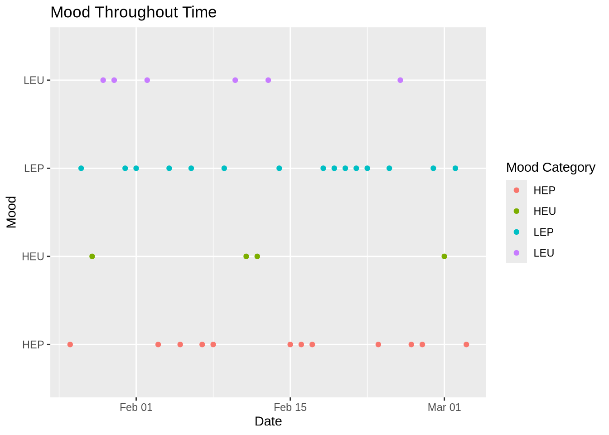

#adding in packages
library(tidyverse)
library(here)
library(flextable)
library(janitor)
library(readxl)
library(MuMIn)
library(DHARMa)
library(ggeffects)
# reading in data
kelp <- read_csv(here(
"data",
"Annual_Kelp_All_Years_20250903.csv"))
mopl <- read_csv(here(
"data",
"MOPL_nest-site_selection_Duchardt_et_al._2019.csv"))
Mood <- read_csv(here(
"data",
"JJMood4.csv"))Final
Problem 1. Research Writing
a. Transparent statistical methods
In part 1, they used a linear regressing test describing a linear relationship between wetland flooding area and precipitation. In part 2, they used a Kruskal-Wallis test since the distribution are the same in the water year classification.
b. Figure needed
One figure that out coworker could make to accompany the Kruskal-Wallis test is a box plot. The y-axis would represent the wetland flooding area(m2 ).The x-axis would represent the water year classification.
c. Suggestions for rewriting
In part 1,we retained that the precipitation doesn’t predict wetland area( (linear regression, (degrees of freedom) = F-statistic R² =coefficient of determination, p = 0.11, α = significance level).
In part 2, We retained that median flooded wetland area does not differ with the water year classification ( η²= effect size) in median flooded wetland area across water year classification (wet, above normal, below normal, dry, critical drought) (Kruskal-Wallis test, ’(degrees of freedom) = H-statistic p = 0.12, α = significance level). I
d. Interpretation
One additional variable that could have influenced the flooded area of wetland was the time period. The time period is a categorical variable due to its numeric values. This variable is important because the time period could influence the amount of flooding, how much data is collected, and if it changes the data found with other tie periods.
Problem 2. Data visualization
a. Cleaning and Summarizing
kelp_clean <- kelp |> # creating a new data frame
clean_names() |> #cleaaning names with underscores and no caps
filter(site %in% c("IVEE", "NAPL", "CARP")) |> #filter to only have those 3 sites
filter(!(date == "2000-09-22" & transect == "6" & quad == "40")) |> # filter rows
mutate(site_name = case_when( # change names and put it into a new column
site == "NAPL" ~ "Naples",
site == "IVEE" ~ "Isla Vista",
site == "CARP" ~ "Carpinteria")) |>
mutate(site_name = as_factor(site_name), # changes "factor" values
site_name = fct_relevel(site_name, # appear in order of the dataset listed above
"Naples", "Isla Vista", "Carpinteria")) |>
group_by(site_name, year) |> # grouping together site and year
summarize(mean_fronds = mean(fronds)) |> # summarize each group down to one row
ungroup() # group by variablesb. Understanding the data
The value of fronds in that “quad” in that “transect” is -99999. This value represent how there was no data collected for that particular species and the datasheet was lost as well. This information can be found in the methods tab.
c. Visualize the data
ggplot(data = kelp_clean, # read in data frame from temo_clean
aes(x = year, # x-axis
y = mean_fronds,#y-axis
color = site_name,# color and group each line by site
group = site_name)) +
geom_point() + # adding points
geom_line() + # connect lines
theme_minimal()+ # changing theme
theme(text = element_text(family = "Georgia")) + # changing font text
theme(legend.position = "right","top") + # move legend to right postions
theme(plot.title = element_text(hjust = 0.5))+ # moving title position
scale_color_manual(values = c("Naples" = "deeppink3", #add color for each site
"Isla Vista" = "slateblue4",
"Carpinteria" = "seagreen1")) +
labs(x = "Year", # rename x, y, title,
y = "Mean kelp fronds per year",
color = "Site",
title = "Sites vary in mean kelp fronds per year") 
d. Interpretation
Isla Vista has the most variable mean kelp per year. Carpinteria has the least variable mean kelp fronds per year.
Problem 3: Data analysis
a. Response variable
In the data set, 1s and 0s represent “yes” or “no” on whether there is a Mountain Plover nest at the site.
b. Purpose of study
The “visual obstruction” predictor is continuous variable because we are measuring a numeric value which is the distance. As visual obstructions increases, the probability of Mountain Plover nest site use would decrease because the Mountain Plover usually breed on open flat fields, with little vegetation. This information can be found in the “Introduction”, paragraph 2 of the Mountain Plover subsection.
The “distance to prairie dog colony edge” predictor is also a continuous variable since we are measuring a numeric value which is the distance. As distance to prairie dog colony edge increases, the probability of Mountain Plover site use would decrease because the Mountain Plover prefer being near prairie dog colonies since they keep the vegetation low. This information can be found in the “Introduction”, paragraph 3 and 4 in the subsection regarding the black-tailed prairie dogs.
c. Table of models
| Model Number | Visual Obstruction | Distance to Prairie Dog Colony | Model Description |
|---|---|---|---|
| 0 | no predictors (null model) | ||
| 1 | X | X | Saturated models |
| 2 | X | Visual Obstruction | |
| 3 | X | Distance to Prairie Dog Colony |
d. Run the models
mopl_clean <- mopl |> # creating new data frame from mopl
clean_names() |> #cleaaning names with underscores and no caps
mutate(used_bin = case_match(id,
"used" ~ 1,
"available" ~ 0)) |> # creating a new column to create 1s and 0s from the id column
select(used_bin, edgedist, vo_nest) # selecting columns listed e. Select the best model
#model 0: null model
model0 <- glm(used_bin ~ 1,
data = mopl_clean,
family = "binomial")
# model 1: all predictors
model1 <- glm(used_bin ~ edgedist + vo_nest,
data = mopl_clean,
family = "binomial")
# model 2: Edge Distance
model2 <- glm(used_bin ~ edgedist,
data = mopl_clean,
family = "binomial")
# model 3: Visual Obstruction at the nest
model3 <- glm(used_bin ~ vo_nest,
data = mopl_clean,
family = "binomial")AICc(
model0,
model1,
model2,
model3) |>
arrange(AICc) df AICc
model3 2 331.8130
model1 3 333.8293
model0 1 384.6318
model2 2 386.1351The best model as determined by Akaike’s Information Criterion(AIC) had the visual obstruction as the predictor and the response as the used_bin ID that included yes or no(1s or 0s) on whether or not there was a nest.
f. Check the diagnostics
dev.off() # reset plottingnull device
1 par(mar = c(4, 4, 2, 1)) # change the margins
plot(simulateResiduals(model3)) # displaying all the codeg. Visualize the model predictions
mod_preds <- ggpredict(model3,
terms = "vo_nest [0:19 by = 1]") # creating new data frame from our model3 dataselt
ggplot(mopl_clean, # creating plot
aes(x = vo_nest, # x-axis
y = used_bin)) + # y-axis
geom_point(size = 3, # adding dots and customizing
alpha = 0.4,
color = "deeppink3") +
geom_ribbon(data = mod_preds, # creating the interval
aes(x = x, # x-axis, y-axis, ymin and y-max, sig level and color
y = predicted,
ymin = conf.low,
ymax = conf.high),
alpha = 0.4,
fill = "deeppink3") +
geom_line(data = mod_preds, # adding line
aes(x = x, # x-axis, y-axis
y = predicted),
linewidth = 2,# changing width
color = "deeppink3") + # changing color
theme_minimal() + # changing theme
scale_y_continuous(limits = c(0, 1), # changing the y-axis/ defualt scales
breaks = c(0, 1)) +
labs(x = "Visual obstruction", # adding titles
y = "Probability of nest use",
title = "Prediction of visual obstruction impact on proability of Mountain Plover nest use")
h. Write a caption for your figure
Figure 3. Maximum Likelihood Estimation(MLE) for nest use and visual obstruction. The points at the top of the graph( in the “1”portion) represent that there is a nest. The points at the bottom of the graph (in the “0” portion) represents that there is no nest. The shaded area that follows the line represents the 95% confidence interval around the predictions and the underlying data. The curved line in the middle represents model predictions. Data from: Duchardt, Courtney; Beck, Jeffrey; Augustine, David (2020). Data from: Mountain Plover habitat selection and nest survival in relation to weather variability and spatial attributes of Black-tailed Prairie Dog disturbance [Dataset]. Dryad. https://doi.org/10.5061/dryad.ttdz08kt7
i. Calculate model predictions
ggpredict(model3, # make predictions
terms = "vo_nest [0]")# Predicted probabilities of used_bin
vo_nest | Predicted | 95% CI
--------------------------------
0 | 0.73 | 0.65, 0.80j. Interpret your results
“Visual obstruction” and “distance to prairie dog colony edge” interact to predict the likelihood of a Mountain Plover nest site. As “visual obstruction” increases, the probability of a Mountain Plover nest decreases. As “distance to prairie dog colony edge” increases, the probability of a Mountain Plover nest decreases as well. To summarize, as “visual obstruction” increases so does “distance to prairie dog colony edge”. The reason between obstruction and probability of Mountain Plover nest site occupancy is that the Mountain Plovers prefer places with empty landscapes and low vegetation to help avoid predictors.Prairie dogs help clear vegetation, so they would want to be closer to prairie dog colonies. At a 95% Confidence Interval( 95%CI: [0.65, 0.80]) the predicted probability of nest site occupancy at 0 is 0.73.
Problem 4. Affective and exploratory visualizations
a. Comparing visualizations
My exploratory visualizations is very simple. It has the bare bones of “attendance” and “emotion”. Compared to my affective visualization, it includes other contribution factors that could have influenced my variables, such as studying an exam or being sick. Both visualizations rely on color to help distinguish the emotions. The second figure was more helpful in inspiring my affective visualization. Both visualizations follow the same trends, nothing different. During week 9 I implemented the suggestions to distinguish the days I did or didn’t go to jiu jitsu but putting a “aura” around the different items. I also took the suggestion to add something when the there was a reason for not going to jiu jitsu that particular day. I thought both of these were great suggestions to make my data clearer for the reader to understand.
b. Designing an analysis
I want to know how two variables relate to/are associated with each other so I think a Spearman correlation would be appropriate. My question would be if attendance of jiu jitsu(predictor and continuous), gives me a more positive mood( response and categorical).
c. Check any assumptions and run your analysis
“mood_clean <- Mood |> clean_names() cor.test(mood_clean\(attendance,mood_clean\)mood_category, # adding in data frame and columns method =”spearman”) # this spearman test”
The test listed above would have checked my data but because of the way my data frame is set up I am unable to run a proper test since I have no numeric values in all of my data.
d. Create a visualization
mood_clean <- Mood |>
clean_names()
ggplot(data = mood_clean, # use my_data data frame
aes(x = dates, # create x-axis and y-axis
y = mood_category,
color = mood_category)) + # color mood_category
geom_point() + # adding points
labs( x = "Date", # relabelling x, y, title, and color
y = "Mood",
title = "Mood Throughout Time",
color = "Mood Category") +
theme_grey() # change theme
e. Write a caption
Figure 2. Mood Throughout Time. Each dot represents the mood I felt at the end of the day in regards of my attendance of going to jiu jitsu. It is split up into four mood categories: red is HEP( high energy positive), green is HEP( high energy unpleasant), blue is LEP( low energy positive), and purple is LEU( low energy unpleasant).
f. Write about your results
My results show that when I attended jiu jitsu, I tend to have a more positive mood/ falls in a positive mood category( HEP/LEP). When I did not, my mood varied but also resulted in more negatives moods ( HEU/LEU).